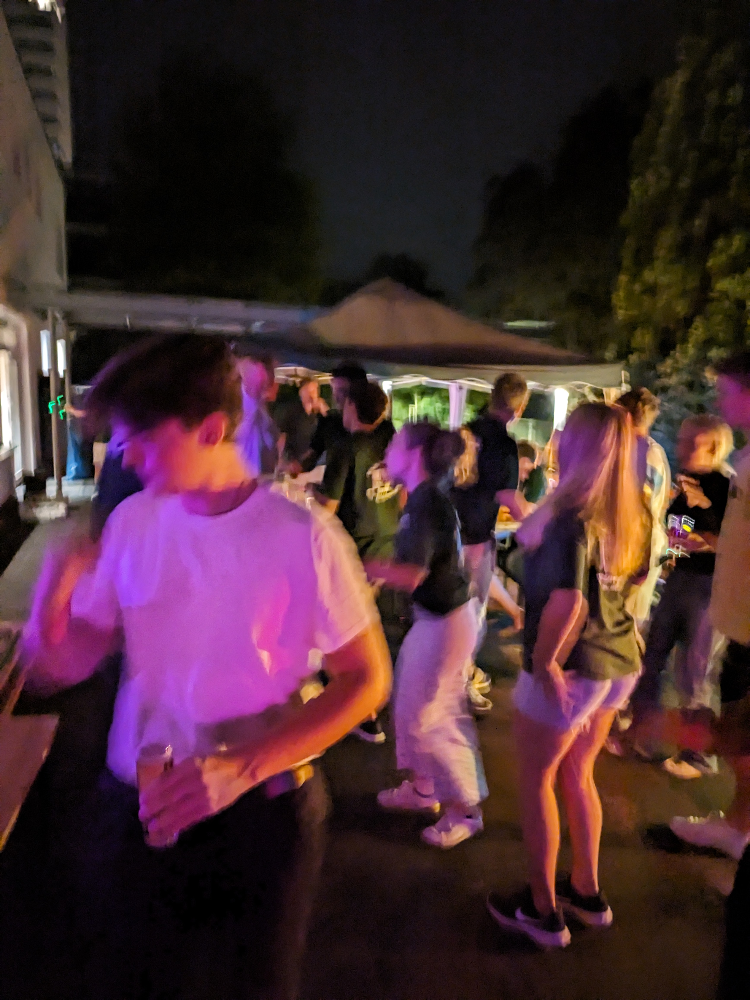

Rudersport aus Tradition.
Willkommen beim Schüler-Ruder-Verein am Ernst-Kalkuhl-Gymnasium. Seit 1976 rudern wir selbstständig auf dem Rhein und auf vielen Gewässern Deutschlands.
Aktuelles
Jubiläumsjahr 2026: 50 Jahre SRV!
In diesem Jahr feiern wir unser 50-jähriges Bestehen! Tragt euch den 1. Mai schon einmal fest in den Kalender ein.

Vereinsgeschichte
Der Rudersport hat eine lange Tradition am Ernst Kalkuhl Gymnasium. Seit dem 1. Mai 1976 wird diese mit dem SRV fortgesetzt. Der Vorstand wird vollkommen selbstständig von Schülern gewählt.
Der Vorstand
Präsident
Florian Kurth
Ruderwarte
Florian Kurth & Julian Klein
Wanderwarte
Jannik Breuer & Martha Herden
Unsere Flotte
Die "Oberkassel"
Unser erstes eigenes Boot von 1978. Ein klassisches Gig-Boot und bis heute fahrbereit!
Gig-Boote
Robust und sicher für Wanderfahrten.
Skiffs
Einer für das Techniktraining.